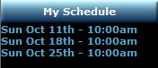

My Schedule

This is displayed on the left side of the home page and indicates the services which you are
scheduled for. If you hover the cursor over a given date, the roles you are scheduled for will be
displayed as well as the practice schedule.
Clicking on a service will direct you to the Worship Service
page displaying all details of that
service.